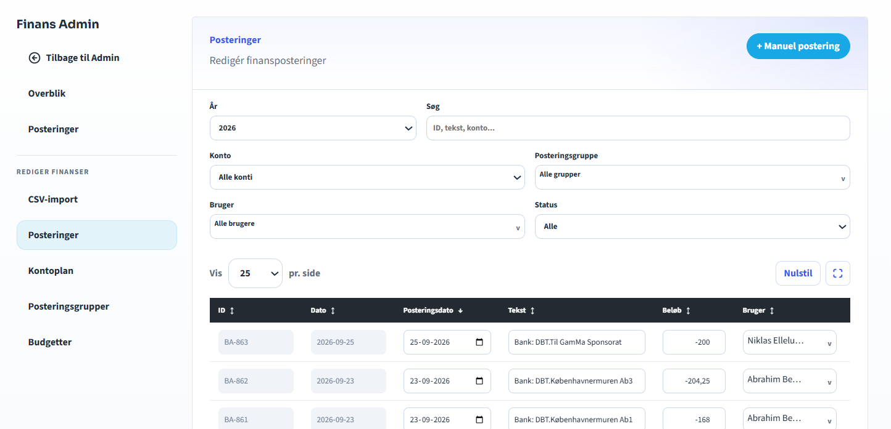
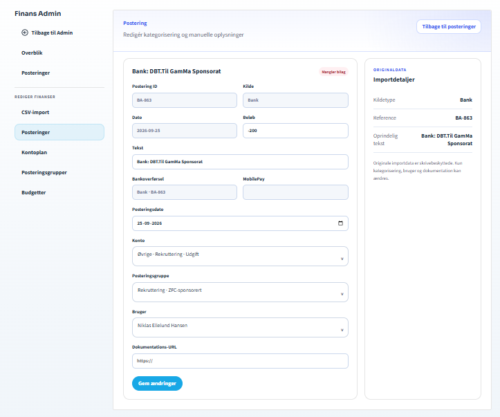

Finans · Posteringer
Opret eller redigér en postering
Kræver: finance.edit.all.
- Åbn Admin → Finans → Posteringer.
- Opret en ny postering, eller åbn en eksisterende.
- Udfyld de krævede felter, og vælg posteringsgruppe og konto.
- Vedhæft et bilag, når bogføringspraksis kræver det. Bilag må ikke publiceres.
- Vælg MobilePay som kilde, når posteringen stammer fra MobilePay.
- Kontrollér beløb, dato og klassificering, og vælg Gem.

